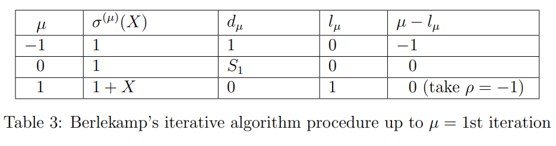

BCH Codes
In this experiment, we consider a binary primitive BCH code, which is a subclass of binary BCH codes that is one of the most important from the standpoint of both theory and implementation. A detailed discussion of the topics covered in this experiment can be found in [1, Chapter 6]. One of the most important and popular subclass of nonbinary BCH codes is the Reed-Solomon codes, presented in Experiment-7.
The theory associated with this experiment is divided into three parts:
- Preliminaries
- Encoding of Binary Primitive BCH codes
- Decoding of Binary Primitive BCH codes
1. Preliminaries
In this section, we recall the basics of Galois fields (fields of prime power Fpm) and the construction of the minimal polynomial of an element belonging to the Galois field. For more details, students can refer to Experiment-6 (Part-4).
In this experiment, we are studying only binary BCH code. Therefore, we consider the Galois field with p=2, i.e., F2m={0,1,α,α2,…,α2m−2}. Here α is the primitive element, which is the root of a primitive polynomial of degree m over F2 and α2m−1=1. Notice that any non-zero element can be generated by the primitive element α (i.e., α raised to the power of some i,0≤i≤2m−2).
For an example all the elements of the field F24 is provided in Table 1, where α15=1. It contains both power and polynomial representations of all elements, which is constructed with the primitive polynomial 1+X+X4. Therefore, the relation 1+α+α4=0 has been used for polynomial representation. This table will be utilized throughout the experiment wherever it is required.
Binary BCH code of length n=2m−1 is called binary primitive BCH code, since the length of the code is equal to the number of elements generated by the primitive element α in F2m. for e.g., binary BCH code of length n=15 over the field F24 is binary primitive BCH code, since n=15=24−1.
In Experiment-1 (Part-1), We have seen the definition of the field F with binary operations addition (+) and multiplication (.). One of the axioms of the field is multiplicative inverse. For every a=0∈F, there exists an element in F, denoted by a−1 called the multiplication inverse of a, such that a.a−1=1. In the later part of the experiment, we will need to find the multiplicative inverses of non-zero elements belonging to F2m. Let's see the method to find the multiplicative inverse of any element for the particular Galois field F2m. The multiplicative inverse of an element αl belongs to F2m is the element αl′ from F2m if and only if αlαl′=1. That implies αl+l′=1, it can happen only if l+l′=2m−1, therefore αl′=α(2m−1)−l. For e.g.,\ inverse of α3 in the field F24 is α15−3=α12.
Minimal polynomials of field elements are used in finding the generator polynomial of the BCH code. So, now let's see the construction of the minimal polynomial of an element through the following example.
Example 1: _Consider the Galois field F24 such that 1+α+α4=0 (see Table 1). Suppose we want to determine the minimal polynomial ϕ(X) of β=α3 in F24. Recall that conjugates of β are the distinct elements βp,βp2,…,βpm, where p is the characteristic of Fpm (here p=2). So the conjugates of the element β=α3 are α3.2=α6,α3.22=α12, α3.23=α9 and α3.24=α3. Hence, the minimal polynomial of β=α3 is_
ϕ(X)=(X+α3)(X+α6)(X+α12)(X+α9)=[X2+(α3+α6)X+α9][X2+(α12+α9)X+α21]=(X2+α2X+α9)(X2+α8X+α6)=X4+(α2+α8)X3+(α6+α10+α9)X2+(α17+α8)X+α15=X4+X3+X2+X+1.
We can find the minimal polynomial of every element as shown above. Conjugates of an element
- α are {α,α2,α4, α8},
- α3 are {α3,α6,α9,α12},
- α5 are {α5, α10} and
- α7 are {α7,α11,α13 and α14}.
The minimal polynomials of α,α3,α5 and α7 are
ϕ1(X)=1+X+X4,ϕ3(X)=1+X+X2+X3+X4,ϕ5(X)=1+X+X2,andϕ7(X)=1+X+X2+X3+X4
respectively.
2. Encoding of Binary Primitive BCH Code
BCH codes form a class of cyclic codes. Suppose we want to design a code that can correct up to t number of errors. In general, finding the generator polynomial to obtain the t -error-correcting cyclic code is difficult. However, the design of BCH codes involves finding an appropriate generator polynomial, which allows the correction of errors up to t. In this section, we will explain the construction of the generator polynomial for a binary primitive BCH code, which can correct up to t errors.
For any positive integers m(m≥3) and t(t<2m−1), there exists a binary BCH code with the parameters: block length n=2m−1, number of parity check-check bits n−k≤mt and minimum distance dmin≥2t+1. This code can correct any combination of t or fewer errors in a block of n=2m−1 bits. From now onwards, in subsequent discussions, we will refer to the binary primitive BCH code as the BCH code. Now we will see the construction of the generator polynomial of t -error-correcting BCH code.
Construction of Generator Polynomial: The generator polynomial of the BCH code is specified in terms of its roots from the Galois field F2m. Let α be a primitive element in F2m. The generator polynomial g(X) of the BCH code of length 2m−1, which can correct up to t errors, is the lowest-degree polynomial over F2 that has α,α2,α3,…,α2t as it roots. i.e., g(αi)=0 for 1≤i≤2t. We know that if β is the root of the polynomial, then all its conjugates are also the roots of that polynomial. Therefore, g(X) has α,α2,α3,…,α2t and their conjugates as all its roots. Let ϕi(X) be the minimal polynomial of αi. Then, g(X) must be the least common multiple (LCM) of ϕ1(X),ϕ2(X),…,ϕ2t(X), that is
g(X)= LCM {ϕ1(X),ϕ2(X),…,ϕ2t(X)}.
Based on the fact that the minimal polynomial of an element and all its conjugates is the same, the generator polynomial can be reduced to
g(X)=LCM{ϕ1(X),ϕ3(X),ϕ5(X),…,ϕ2t−1(X)}.
Now, we can obtain the polynomial representation of the codeword for the given message vector u=[u0u1…uk−1]∈F2k as
v(X)=u(X)g(X)=v0+v1X+v2X2+…+vn−1Xn−1,
where u(X)=u0+u1X+u2X2+…+uk−1Xk−1 is the polynomial representation of the message u∈F2k. The codeword of u∈F2k is the vector representation of v(X), i.e., v=[v0v1…vn−1]∈F2n.
Now we will illustrate the construction of a generator polynomial with an example (Example 2).
Example 2: A t-error-correcting BCH code of length 15.
_The length of the code n=15=2m−1, that implies m=4. Let α be a primitive element of Galois field F24 such that 1+α+α4=0. Elements of F24 are given in Table 1._
_For t=1: From Eq. (2) the generator polynomial g(X)=LCM{ϕ1(X)}. Therefore, the minimal polynomial ϕ1(X) is the generator polynomial. The minimum distance of the BCH code dmin≥2t+1=3. The generator polynomial g(X)=(1+X+X4) is the minimal degree code polynomial of the code, and the weight of the corresponding codeword is 3. Since dmin≥3 and there is a codeword of weight 3 in the code, hence the dmin=3. Therefore, with the above g(X) we obtain the code (n=15,k=11,dmin=3) which can correct any single error._
For t=3: From Eq. (2) the generator polynomial, g(X)=LCM{ϕ1(X),ϕ3(X),ϕ5(X)}. Because ϕ∗1(X),ϕ∗3(X),ϕ_5(X) are three distinct irreducible polynomials.
g(X)=ϕ1(X)ϕ3(X)ϕ5(X)=(1+X+X4)(1+X+X2+X3+X4)(1+X+X2)=1+X+X2+X4+X5+X8+X10.
The minimum distance of the code dmin≥2t+1=7 and the weight of the codeword corresponding to the code polynomial g(X)=1+X+X2+X4+X5+X8+X10 is 7, hence dmin=7. Therefore, with the above g(X) we obtain BCH code (n=15,k=5,d=7), which can correct up to any three errors. Notice that these codes are not MDS codes.
3. Decoding of Binary Primitive BCH Code
Suppose that a codeword v(X)=v0+v1X+v2X2+…+vn−1Xn−1 is transmitted over Binary Symmetric Channel (BSC), and the received vector is r(X)=r0+r1X+r2X2+…+rn−1Xn−1. Let e(X)=e0+e1X+e2X2+…+en−1Xn−1 is the error pattern. Then,
r(X)=v(X)+e(X).
In Experiment-4 (Part-2), we studied syndrome decoding for linear block codes. The key steps in syndrome decoding consist of computing the syndrome of the received vector and associating it with the error pattern, which is then added to obtain the decoded codeword. Now we will discuss the procedure to find the syndrome of the received vector and its error pattern for the BCH code.
In a t -error-correcting BCH code, the syndrome can be found from the fact that α,α2,…,α2t are the roots of g(X) (refer Eq. (2)), i.e., g(αi)=0,∀1≤i≤2t. According to Eq. (3) every code polynomial v(X)=u(X)g(X), so for every 1≤i≤2t we get v(αi)=u(αi)g(αi)==u(αi).0=0. Using these 2t elements as evaluation points for the received polynomial, the syndrome vector will form with 2t components. Let the syndrome vector S=[S1S2…S2t] and its components are Si=r(αi),∀1≤i≤2t. Furthermore, from Eq. (4) we also get r(αi)=v(αi)+e(αi)=0+e(αi)=e(αi), for all 1≤i≤2t. Therefore
S=[S1S2…S2t]=[r(α1)r(α2)…,r(α2t)]=[e(α1)e(α2)…e(α2t)].
Since Si=e(αi) for 1≤i≤2t, the syndrome S depends on the error pattern e only. Suppose that the error vector e has ν errors at locations j1,j2,…,jν, where 0≤j1<j2<…<jν<n. Then the corresponding error polynomial
e(X)=Xj1+Xj2+…+Xjν.
From Eq. (5) and Eq. (6) we obtain for every 1≤i≤2t,Si=(αj1)i+(αj2)i+…+(αjν)i. Since, jl's are unknown, αjl's are also not known. For convenience, let βl=αjl for 1≤l≤ν. We call these elements the error location numbers. Since by knowing βl's, we can tell the location of the errors jl. Now we define the following polynomial:
σ(X)≜(1+β1X)(1+β2X)…(1+βνX)=σ0+σ1X+σ2X2+…+σνXν.
The roots of σ(X) are β1−1,β2−1,…,βν−1, which are the inverses of β1=αj1,β2=αj2,…,βν=αj1. Therefore, by knowing βl−1 for all l we can find βl=αjl, thus we get the location of errors jl of e. For this reason, σ(X) is called the error-location polynomial. Note that σ(X) is an unknown polynomial whose coefficients σl's must be determined. Our decoding strategy is to estimate the codeword that is nearest to the received vector, which is equivalent to finding an error pattern with less number of error locations. Therefore, utilizing the relationship between σl's and syndrome components Si's, we aim to determine σ(X) with the lowest possible degree. Because the lowest possible degree will have less number of roots (βl's), hence the number of error locations (jl's) are minimum. If ν≤t, this σ(X) will give the actual an error pattern e(X).
By knowing the polynomial σ(X), we can find its roots by substituting the elements from the field F2m. From this, we can find β1=αj1,β2=αj2,…,βν=αjν and j1,j2,…,jν are the error location numbers.
Now, we can summarize the error-correcting procedure for BCH codes with three major steps:
- Compute the syndrome S=[S1S2…S2t] from the received polynomial r(X).
- Determine the error-location polynomial σ(X) from the syndrome components S1,S2,…,S2t.
- Determine the error-location numbers β1=αj1,β2=αj2,…,βν=αjν by finding the roots of σ(X), and correct the errors in r(X).
In step 1, computing the syndrome can be done by evaluating the received polynomial at αi's. In step 3, for the given σ(X) (obtained from Step 2) the roots βl−1 of σ(X) can be obtained by substituting all the field elements, from that we can find βl=αjl and the corresponding error-location numbers jl. Among all the three steps, step 2 is the most complicated part of decoding a BCH code. For step 2, in this experiment, we present one of the iterative algorithms called Berlekamp's iterative algorithm for finding the error-location polynomial σ(X). This algorithm has initial state values for μ=−1,0 rows (see Table 2}). Using these initial rows and the syndrome components S1& S2, the first step of iteration μ=1 is to find the minimal degree polynomial σ(1)(X) and the entire μ=1th row of the table. The next step is to find σ(2)(X) and μ=2th row. For this, we use the rows μ=−1,0,1, and syndrome components S1,S2& S3. This process will continue up to 2t iterations. Suppose the algorithm is performed μth row, then (μ+1)th step of iteration is to find the minimum-degree polynomial σ(μ+1)(X) and entire μ+1 th row of the table. Syndrome components S1,S2,…,Sμ+1 and the rows up to μ are used to obtain the σ(μ+1)(X). Now we will see the procedure of Berlekamp's iterative algorithm to get σ(μ+1)(X) in detail.
Berlekamp’s iterative algorithm: If the number of errors in the received polynomial r(X) are t or less, then σ(X) produces the true error pattern. Let
σ(μ)(X)=1+σ1(μ)X+σ2(μ)X2+…+σlμ(μ)Xlμ
be the minimum-degree polynomial determined at the μth step of the iteration. Here lμ is the degree of σ(μ)(X) and σj(μ) is the coefficient of Xj for j=0,1,2,…,lμ.
To carry out the iteration of finding σ(X), we begin with Table \ref{Table:Berlekamp_algorithm} and proceed to fill out the table, where lμ is the degree of σ(μ)(X) and dμ is called the μth discrepancy. Assuming that we have filled out all rows up to and including the μth row, we fill out the (μ+1)th row as follows:
- If d_μ=0, then
σ(μ+1)(X)=σ(μ)(X),andlμ+1=lμ.
- If dμ=0, we find another row ρ prior to the μth row such that dμ=0 and the number ρ−lρ in the last column of the table has the largest value. Then, σ(μ+1)(X) is
σ(μ+1)(X)=σ(μ)(X)+dμdρ−1X(μ−ρ)σ(ρ)(X),
and
lμ+1=max(lμ,lρ+μ−ρ).
In either case,
dμ+1=Sμ+2+σ1(μ+1)Sμ+1+…+σlμ+1(μ+1),
where the σi(μ+1)'s are the coefficients of σ(μ+1)(X). The polynomial σ(2t)(X) in the last row should be the required σ(X). If its degree is greater than t, there are more than t errors in the received polynomial r(X), then there will be a decoding error. Because the roots of the obtained σ(X) don't provide the correct error locations of the received vector.
Now, we decode the codeword of the received vector given in the following example, which can be divided into three major steps as discussed earlier.
Example 3: Consider the (15,5,7) triple-error-correcting BCH code given in the Example 2. Suppose that v=[0,0,0,0,0,0,0,0,0,0,0,0,0,0,0]
is transmitted, and the vector r=[0,0,0,1,0,1,0,0,0,0,0,0,1,0,0] is received. Then r(X)=X3+X5+X12. The step-by-step decoding process of r(X) is explained below:
Step 1: We find the syndrome vector of the received polynomial from Eq. (5),
S=[S1S2S3S4S5S6],=[r(α1)r(α2)r(α3),r(α4)r(α5)r(α6)].
For this example, for 1≤i≤2t, r(αi)=α3i+α5i+α12i can be found by using Table 1. Let's look at the evaluation of the received polynomial r(αi) for i=1,2,3:
r(α)=α3+α5+α12=α3+(α+α2)+(1+α+α2+α3)=1.
r(α2)=α6+α10+α24=α6+α10+α9=(α2+α3)+(1+α+α2)+(α+α3)=1.
r(α3)=α9+α15+α36=α9+1+α6=(α+α3)+1+(α2+α3)=α10.
Similarly, we can find for i=4,5,6. The syndrome vector
S=[S1S2S3S4S5S6],=[r(α1)r(α2)r(α3)r(α4)r(α5)r(α6)],=[11α101α10α5].
Thus, we obtained the syndrome of the received polynomial. Now, we move on to step 2 in order to find the error-location polynomial σ(X) for which we use Berlekamp's iterative algorithm.
Step 2: In the process of determining the error-location polynomial σ(X), we see a few iterations of the Table 2 of the Berlekamp's algorithm for the Example 3.
First iteration:
_We start with Table 2 which has initial values till μ=0th row. Now let's find the row μ+1=0+1=1. Since d0=S∗1=1=0 (condition 2 in the algorithm), ρ=−1. Therefore, from Eq. (10) the minimum-degree polynomial*
σ(1)(X)=σ(0+1)(X)=σ(0)(X)+d0(d−1)−1X(0−(−1))σ(−1)(X)=1+1(1)−1X(1)=1+X.
From Eq. (11), the degree
l1=l0+1=max(l0,l−1+0−(−1))=max(0,0+1)=1.
From Eq. (12), the discrepancy
d1=d0+1=S0+2+σ1(0+1)S0+1=S2+σ1(1)S1=1+1.1=0.
Now we have filled up to the row μ=1 in Table 2, and it will be as shown in Table 3.

Second iteration: _Now, using the Table 3, let's find the row μ+1=1+1=2. Since d1=0 (condition 1 in the algorithm), from Eq. (9) the minimum-degree polynomial_
σ(2)(X)=σ(1+1)(X)=σ(1)(X)=1+X,and the degreel2=l1+1=l1=1.
From Eq. (12), the discrepancy
d2=d1+1=S1+2+σ1(1+1)S1+1=S3+σ1(2)S2=α10+1.1=(1+α+α2)+1=α5.
Now we have filled up to the row μ=2 in Table 2, and it will be as shown in Table 4.
Third iteration: Now, using the Table 4, let's find the row μ+1=1+1=2. Since d2=α5=0, ρ=0. Therefore, from Eq. (10) the minimum-degree polynomial
σ(3)(X)=σ(2+1)(X)=σ(2)(X)+d2(d0)−1X(2−(0))σ(0)(X),=(1+X)+α5(1)−1X2(1).=1+X+α5X2.
From Eq. (11), the degree
l3=l2+1=max(l2,l0+2−(0))=max(1,0+2−0)=2.
From Eq. (12), the discrepancy
d3=d2+1=S2+2+σ1(2+1)S2+1+σ2(2+1)S2=S4+σ1(3)S3+σ2(3)S2=1+(1)α10+α5(1)=1+(1+α+α2)+(α+α2)=0.
Now we have filled up to the row μ=3 in Table 2, and it will be as shown in Table 5. Similarly, we can find up to μ=6th iteration and are left for exercise.